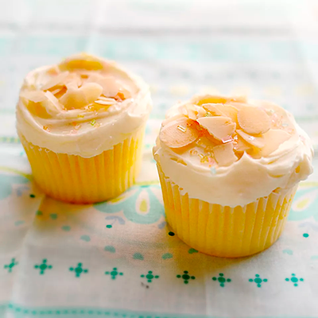

Lemon Cupcake

Description
Here is a recipe I use for beautifully delicious lemon cupcakes. Ideally, you'd use buttercream frosting to ice
cupcakes, but I tried these with Lemon Cream Icing for a less buttery icing, and they were perfect! These
cupcakes are truly lighter than air and will melt in your mouth.
- 3 cups self-rising flour
- ½ teaspoon salt
- 1 cup unsalted butter, at room temperature
- 2 cups white sugar
- 4 eggs, at room temperature
- 1 teaspoon vanilla extract
- 2 tablespoons lemon zest
- 1 cup whole milk, divided
- 2 ½ tablespoons fresh lemon juice, divided
- Preheat oven to 375 degrees F (190 degrees C). Line 30 cupcake pan cups with paper liners.
- Sift the self-rising flour and salt together in a bowl. In another bowl, beat the unsalted butter and sugar
with an electric mixer until light and fluffy. Beat in the eggs one at a time, beating each egg until
incorporated before adding the next. Mix in the vanilla extract and lemon zest.
- Gently beat the flour mixture into the butter mixture, one third at a time, alternating with half the milk
and half the lemon juice after each of the first 2 additions of flour. Beat until just combined; do not over
mix.
- Fill the prepared cupcake liners with batter 3/4 full, and bake in the preheated oven until a toothpick
inserted in the center comes out clean, about 17 minutes. Let the cupcakes cool in the pans for about 10
minutes before removing them to finish cooling on a rack.
- To make the icing, beat the cream in a chilled bowl with an electric mixer set on Low until the cream
begins to thicken. Add the confectioners' sugar and lemon juice, a little at a time, beating after each
addition, until fully incorporated. Increase the mixer speed to High, and beat until the icing forms soft
peaks, about 5 minutes. Spread on the cooled cupcakes. Refrigerate leftovers.